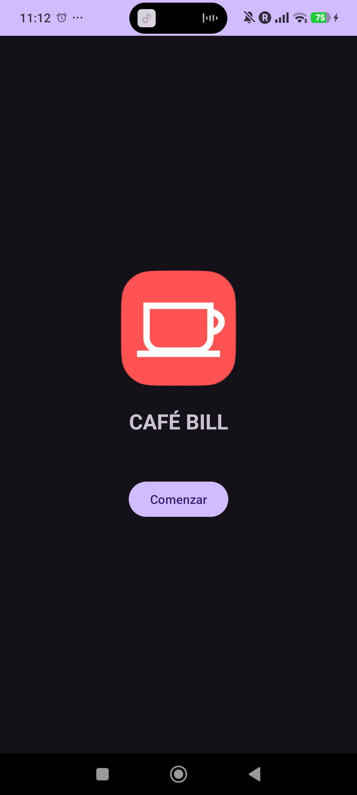
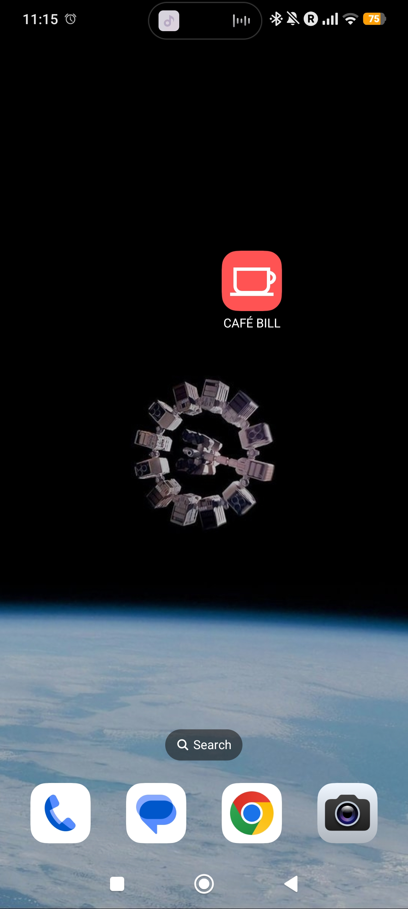
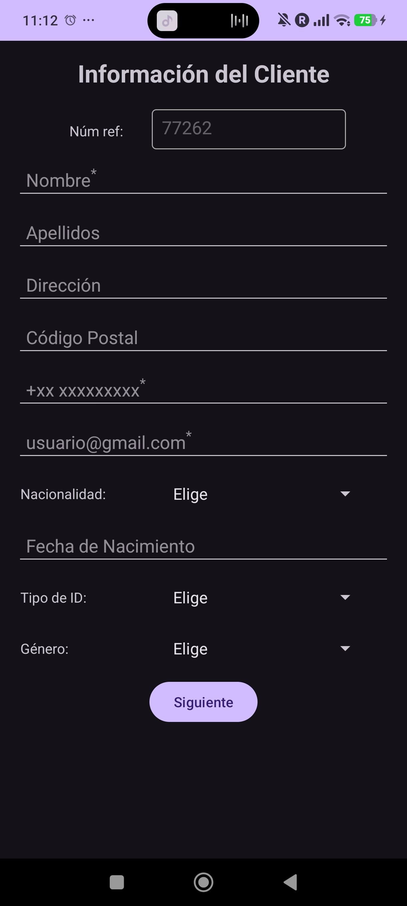
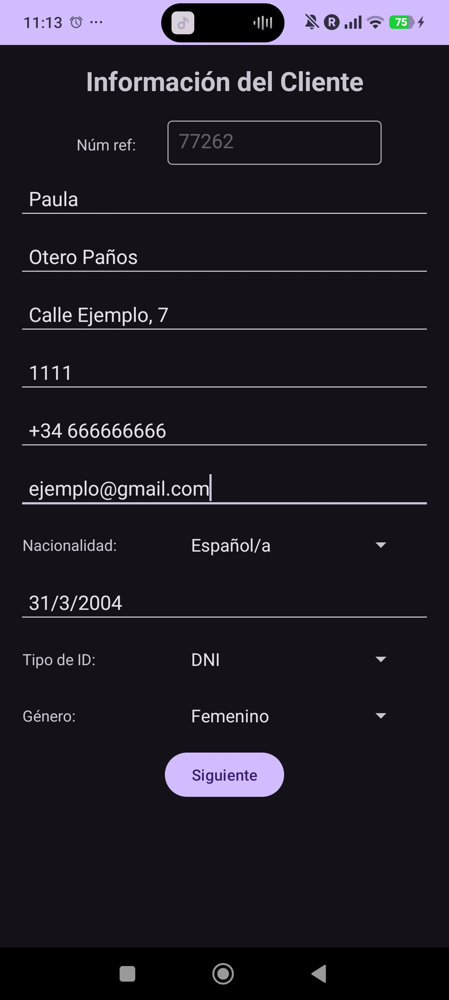
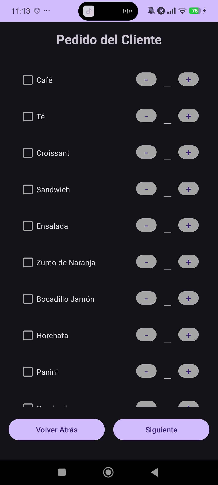
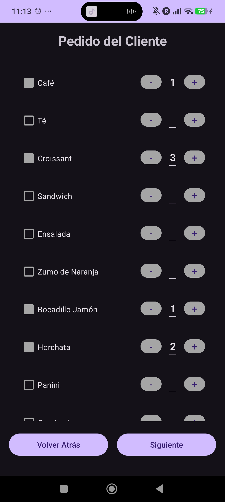
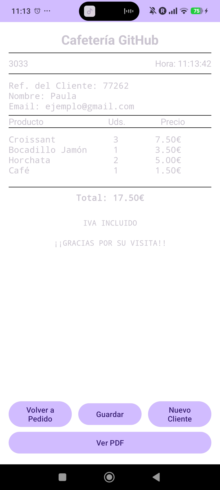
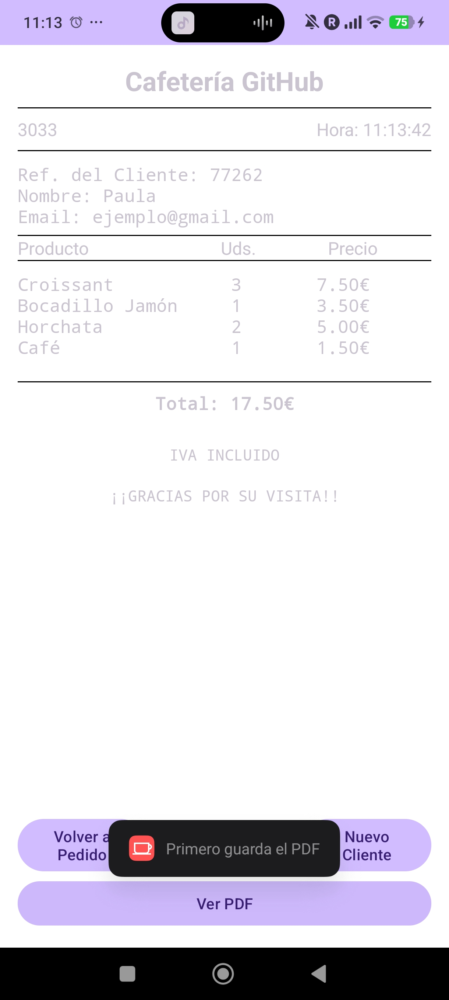
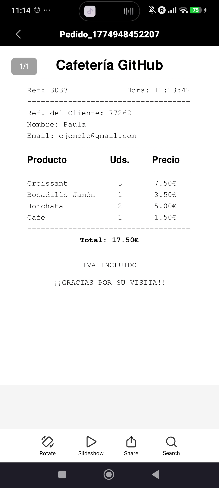

Café Bill -
Android ordering app
A fully functional Android application for cafeteria order management. Staff register a new client, compose their order from a scrollable menu, review a generated receipt on screen, and optionally export it as a PDF - all within a clean dark-themed UI. Built in Java with a team of four.
Overview
A cafeteria in your pocket
The brief was open: design and implement any Android app. We chose to build something grounded in a real use case - a point-of-sale ordering tool for a cafeteria, called Café Bill. A staff member opens the app, registers a new client (with a randomly generated reference number), selects items and quantities from the full menu, and the app produces a formatted receipt - either displayed on screen or exported as a shareable PDF file.

Splash screen

App icon on home screen
User flow
Four screens, one complete order
Screen 1
Splash
Screen 2
Client info
Screen 3
Order / menu
Screen 4
Receipt
Optional
PDF export
Screen 2 - Client registration
Client information form
The first active screen collects client details before the order begins. A
reference number is auto-generated on screen load and shown in a read-only field
at the top - this ties the receipt to a unique transaction. Required fields (name,
phone, and email) are marked with an asterisk; leaving any of them empty triggers an
AlertDialog and blocks navigation. Name and email are carried through to the
receipt.
Spinners handle nationality, ID type and gender for fast, consistent input. Date of
birth uses a DatePickerDialog for an intuitive calendar-style selector. Tapping
Siguiente validates the form before proceeding; navigating back preserves all
previously entered data.

Empty form

Form filled in
Screen 3 - Order
Menu & quantity selection
The order screen displays the full café menu as a scrollable list. Each item has a checkbox and a − / + stepper. There are two ways to add an item: tapping the checkbox automatically sets the quantity to 1 and marks it selected; from there, + increments further. Alternatively, tapping + directly also works without needing to check the box first.
To remove an item: tapping the checkbox again deselects it and resets the quantity to zero, or decrementing with − all the way to zero has the same effect. All selections are preserved if the user navigates back to the client form, so returning to the order screen shows the same state.

No items selected

Items and quantities selected
Screen 4 - Receipt
On-screen receipt & PDF export
The receipt screen renders a formatted bill: order reference, timestamp, client name and email, an itemised table with units and prices, a bold total, and the standard "IVA incluido / Gracias por su visita" footer. Four action buttons appear at the bottom: go back to edit the order (selections are preserved), save to PDF, start a new client session, or view the saved PDF.
The PDF export uses Android's PdfDocument API to render the receipt layout to a
file, saved to the app's external storage directory
(/storage/emulated/0/Android/data/es.upv.etsit.aplicusa/files) with a timestamped
filename. FileProvider is configured in the manifest to share the file securely with
the system PDF viewer. Attempting to open the PDF before saving it triggers a
Toast notification - "Primero guarda el PDF" - to guide the user. The
Nuevo Cliente button resets all data and generates a fresh reference number,
ready for the next order.

On-screen receipt

Toast: save before viewing

Exported PDF opened in viewer
Demo
See it in action
The full order flow from splash screen to PDF generation, recorded directly on device.
Screen recording - client registration → order selection → receipt → PDF export
Features
What the app does
Auto-generated reference numbers
Each session generates a random client reference number on load. A separate order reference number is generated for the receipt, giving each transaction a unique identifier.
Form validation
Required fields (name, phone, email) are validated before the user can proceed to the order screen. Dropdowns for nationality, ID type and gender ensure consistent data entry.
Checkbox + counter ordering UI
Each menu item pairs a checkbox with a − / + stepper. Incrementing auto-selects the item; decrementing to zero deselects it. The quantity is shown inline between the two buttons.
On-screen receipt with live total
The receipt screen displays an itemised bill with product names, units, and prices calculated from a predefined price list. The total updates to reflect the exact selection.
PDF export via Android PdfDocument
The receipt is rendered to a PDF file using Android's native PdfDocument API and saved to external storage with a timestamped filename. The file can then be opened in any PDF viewer on the device.
New client session without restart
A "Nuevo Cliente" button resets the form and generates a new reference number, allowing back-to-back orders without closing the app.
Architecture
Class structure
The app follows a standard Android Activity-based architecture. Data is passed
between screens using Intent extras. The menu items and prices are defined
in a dedicated model class, keeping business logic separate from UI code.
| Class / Activity | Responsibility |
|---|---|
| HomeActivity | Splash screen. Shows the app logo and name via an ImageView and TextView, with a button that navigates to CustomerInfo. Layout: activity_home.xml. |
| CustomerInfo | Client registration form. Collects name, phone, email (required, validated with AlertDialog), plus nationality/ID type/gender via Spinners and date of birth via DatePickerDialog. Auto-generates the client reference number. Passes data to CustomerPedido. Layout: customer_info.xml. |
| CustomerPedido | Order screen. Presents the full menu list with checkboxes and − / + steppers. Preserves selections on back-navigation. Passes client + order data forward to CustomerTotal. Layout: customer_pedido.xml + item_menu.xml (RecyclerView row). |
| CustomerTotal | Receipt screen. Renders the itemised bill with client info, products, units, prices and total. Handles Save (PDF generation), View PDF (via FileProvider), Back to order, and New Client (resets all state + new reference). Layout: customer_total.xml. |
Supporting resources
| Resource / File | Purpose |
|---|---|
| AndroidManifest.xml | Declares all activities, external storage read/write permissions, and configures FileProvider for secure PDF sharing. |
| arrays.xml | Spinner data arrays (nationality options, ID types, gender options). |
| file_paths.xml | FileProvider path configuration for the PDF output directory. |
| themes.xml / themes.xml (night) | App-wide theme including the dark background used throughout the UI. |
Reflection
What we learned
This was our first full Android application built from scratch. The most technically
demanding part was the PDF generation - Android's PdfDocument API requires
drawing everything manually (text positions, line spacing, separator lines, column
alignment) rather than inflating a layout, which forced us to think carefully about
document structure as code. Configuring FileProvider in the manifest correctly
to share the generated file with the system viewer was also a non-trivial step that
required understanding Android's file-sharing security model.
Managing state across Activities through Intent extras required discipline:
client data and order data both needed to be correctly serialised and passed at each
transition, and both needed to survive backwards navigation. The Nuevo Cliente
flow - resetting all state in place and generating a fresh reference number without
restarting the whole app - was a small but satisfying problem to solve cleanly.
Resources
Code & documentation
Source code available on GitHub (private repository - contact me for access).
Team
UPV - ETSI Telecomunicación · Applications & Usability · 2023/24